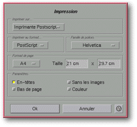

<!-- Documentation XMayday (c)1996-2000 AXENE contact axene@axene.org>
<HTML>
<HEAD>
<TITLE>Impression</TITLE>
</HEAD>

<BODY BGCOLOR=#FFFFFF BACKGROUND="Images/back.gif" TEXT=#000000>
<P ALIGN=right>


<P>
<BR>
<BR>
La bo&icirc;te de dialogue <I>&quot;Impression&quot;</I> permet
de choisir les diff&eacute;rents param&egrave;tres d'impression.
<BR>
<BR>
<HR>
<BR>
<CENTER>

<BR>
<I><SMALL>
Photo d'&eacute;cran&nbsp;: Bo&icirc;te d'impression.
</I></SMALL>
</CENTER><P>
<BR>
<HR>
<BR>
<P>
<H3>Partie sup&eacute;rieure de la bo&icirc;te de dialogue&nbsp;:</H3>
<UL>
  <LI><A NAME="printer_list">la liste d&eacute;roulante &quot;<I>Imprimer
     sur...</I>&quot; permet de <B>s&eacute;lectionner une imprimante</B>
     parmi celles d&eacute;finies dans les 
     <A HREF="ConfigPrinter.html">fichiers de configuration</A> et qui sera
     utilis&eacute;e pour imprimer la page HTML. La liste contient une
     entr&eacute;e particuli&egrave;re intitul&eacute;e <I>&quot;Fichier&quot;</I>,
     qui, si elle est choisie, permet d'<B>imprimer dans un fichier</B> dont
     le nom sera choisi ult&eacute;rieurement dans le s&eacute;lecteur
     de fichier 
     '<A HREF="Box_File_Selectors.html#fs_print_in_file">Impression dans le fichier...</A>'
     &agrave; la fermeture de cette bo&icirc;te.
     </A><P>
  <LI><A NAME="section_print_format">la section <I>&quot;Imprimer
     au format...&quot;</I> permet de <B>choisir le format de sortie
     de l'impression</B>. Les formats disponibles sont les suivants&nbsp;:</A>
     <P>
     <UL>
       <LI><I>&quot;Texte&quot;</I> correspond &agrave; un format de sortie
	  en <B>texte brut</B>.
	  <P>
       <LI><I>&quot;Texte format&eacute;&quot;</I> correspond &agrave; un format de sortie
	  en <B>texte mis en forme</B> (gestion des styles de texte, puces...)
	  <P>
       <LI><I>&quot;PostScript&quot;</I> correspond au format de sortie en langage
	  <B>PostScript</B>&reg;.
	  <P>
     </UL>

  <LI><A NAME="section_font_family">la section <I>&quot;Famille
     de polices&quot;</I> permet de <B>choisir la famille de polices</B>
     &agrave; utiliser pour l'impression en PostScript.
     Cette section est gris&eacute;e si le format d'impression n'est
     pas <I>&quot;PostScript&quot;</I>.
     </A><P>
  <LI><A NAME="section_page_format">la section <I>&quot;Format de
     page&quot;</I> permet de <B>choisir les dimensions des pages</B>
     &agrave; imprimer. Cette section est gris&eacute;e si le format
     d'impression n'est pas <I>&quot;PostScript&quot;</I>. Elle est compos&eacute;e
     de gauche &agrave; droite par&nbsp;:
     </A><P>
     <UL>
       <LI><A NAME="page_format_list">une liste d&eacute;roulante donnant
	  acc&egrave;s aux <B>formats de pages standards</B>. Lorsque l'on
	  change manuellement une des dimensions de la page, l'&eacute;l&eacute;ment
	  s&eacute;lectionn&eacute; de cette liste prend la valeur <I>&quot;Other&quot;</I>.
	  </A><P>
       <LI><A NAME="page_width_textfield">un champ texte qui permet de
	  <B>sp&eacute;cifier la largeur de la page</B>. La valeur est exprim&eacute;e
	  en centim&egrave;tres et doit &ecirc;tre comprise entre 1(cm)
	  et 300(cm).
	  </A><P>
       <LI><A NAME="page_height_textfield">un champ texte qui permet
	  de <B>sp&eacute;cifier la hauteur de la page</B>. La valeur est
	  exprim&eacute;e en centim&egrave;tres et doit &ecirc;tre comprise
	  entre 1(cm) et 300(cm).
	  </A><P>
     </UL>

  <LI><A NAME="section_parameters">la section <I>&quot;Param&egrave;tres&quot;</I>
     permet d'<B>activer/d&eacute;sactiver des param&egrave;tres pour
     l'impression en PostScript&reg;</B>. Cette section est gris&eacute;e
     si le format d'impression n'est pas <I>&quot;PostScript&quot;</I>. Elle
     est compos&eacute;e de haut en bas et de gauche &agrave; droite
     par&nbsp;:
     </A><P>
     <UL>
       <LI><A NAME="headers_button">le bouton <I>&quot;En-t&ecirc;tes&quot;</I>
	  permet d'<B>inclure les en-t&ecirc;tes de haut
	  et de bas de page</B> &agrave; l'impression. L'en-t&ecirc;te
	  du haut contient &agrave; gauche le titre de la page html et &agrave;
	  droite le num&eacute;ro de page. L'en-t&ecirc;te du bas contient
	  &agrave; gauche le nom du fichier et &agrave; droite la date et
	  l'heure.
	  </A><P>
       <LI><A NAME="footnotes_button">le bouton <I>&quot;Bas de page&quot;</I>
	  permet d'<B>inclure les notes de bas de page</B> &agrave; l'impression.
	  L'activation de ce bouton permet
	  de faire des renvois sur tous les liens hypertextes de la page
	  et de reporter en note de bas de page le nom des fichiers correspondants.
	  </A><P>
       <LI><A NAME="without_image_button">le bouton <I>&quot;Sans les
	  images&quot;</I> permet d'<B>exclure les images</B> &agrave; l'impression.
	  Si ce bouton est
	  activ&eacute;, les images seront remplac&eacute;es par des rectangles
	  de tailles correspondantes. L'inclusion des images rend la taille
	  des donn&eacute;es d'impression beaucoup plus importante et le
	  temps d'impression beaucoup plus long. Ainsi, imprimer sans les
	  images permet d'imprimer rapidement une &eacute;preuve d'une page
	  html.
	  </A><P>
       <LI><A NAME="color_button">le bouton <I>&quot;Couleur&quot;</I> permet
	  d'<B>imprimer les images en couleur</B>.
	  Par d&eacute;faut, l'impression des images s'effectue
	  en niveaux de gris (la taille des donn&eacute;es en couleur est beaucoup plus
	  importante qu'en niveaux de gris).
	  </A><P>
     </UL>
</UL>
<P>
<BR>
<H3>Partie inf&eacute;rieure de la bo&icirc;te de dialogue&nbsp;:</H3>
<UL>
  <LI><A NAME="button_ok"><I>&quot;Ok&quot;</I> <B>lance l'impression
     de la page html</B> de navigation courante et ferme la bo&icirc;te.
     Si l'imprimante choisie est 'Fichier', le s&eacute;lecteur de fichier
     '<A HREF="Box_File_Selectors.html#fs_print_in_file">Impression dans le fichier</A>'
     appara&icirc;tra.
     </A><P>
  <LI><A NAME="button_cancel"><I>&quot;Annuler&quot;</I> <B>abandonne
     l'impression</B> et ferme la bo&icirc;te.
     </A><P>
</UL>
<BR>
<HR>
<P ALIGN=right>
<P>
</BODY>
</HTML>
